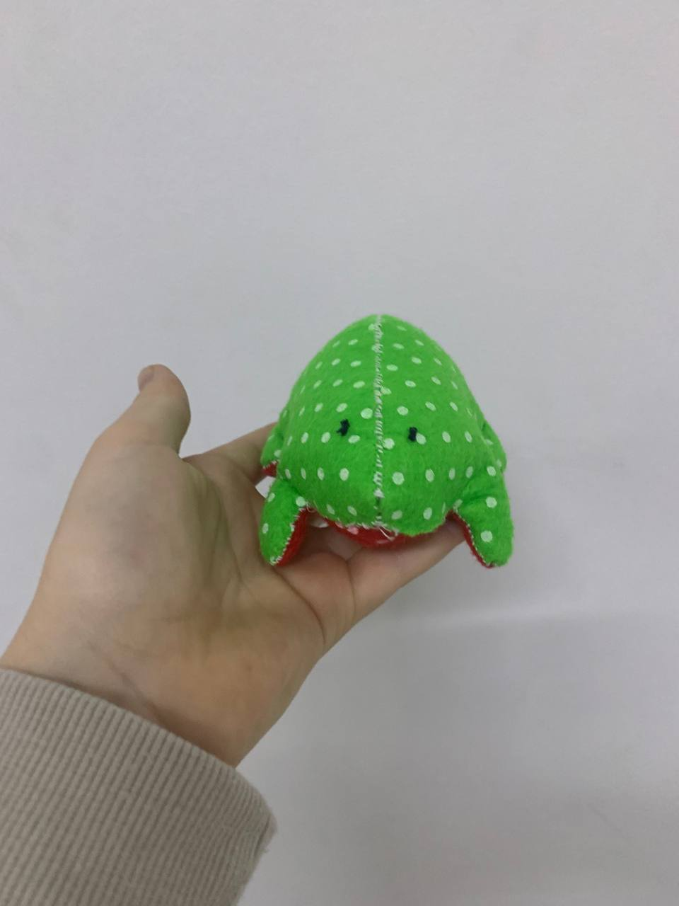
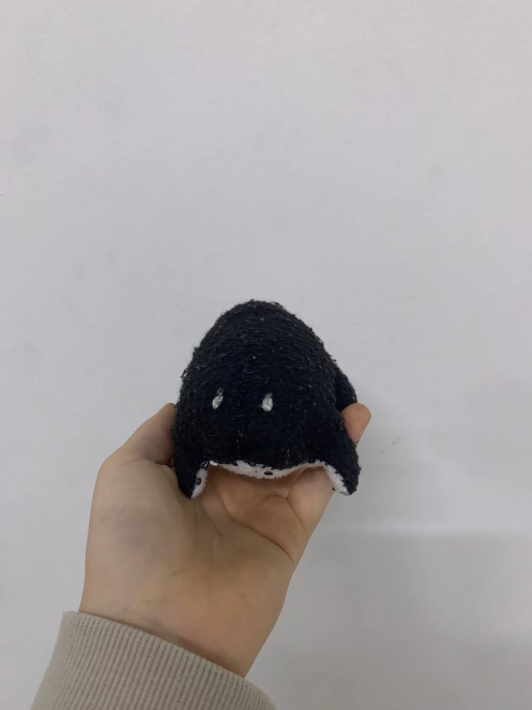
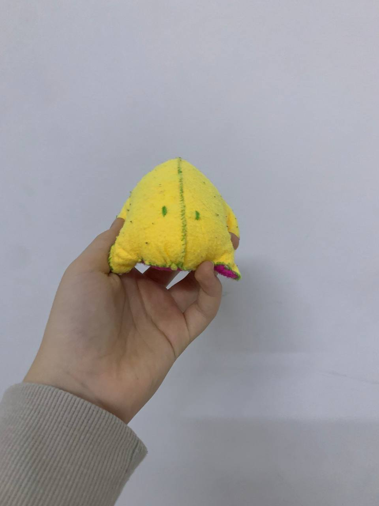

Вироби



Про мене
Привіт! Мене звати Еліна, мені 11 років. У мене є брат Лука. Я люблю малювати і шити.
Мої найкращі подруги: Рената, Ніколь, Злата, Юля та друг Ілля.
Жабенята
Тканина
Я найбільше використовую фетр

Фетр — це щільний нетканий матеріал, що отримується шляхом валяння вовняних або синтетичних волокон. Він широко використовується у рукоділлі, дизайні та шитті іграшок.
Переваги фетру:
- Не сиплеться при різанні
- Легко прошивається вручну та на машинці
- Доступний у різних кольорах та товщинах
- Підходить для створення аплікацій, іграшок, прикрас
Види фетру:
| Тип | Особливості | Застосування |
|---|---|---|
| Натуральний фетр | Виготовляється з вовни, м'який і теплий | Капелюхи, аксесуари, художні вироби |
| Синтетичний фетр | З поліестеру або віскози, дешевший, не мнеться | Іграшки, декор, аплікації |
| Жорсткий фетр | Щільний, добре тримає форму | Косметички, органайзери, коробки |
Цікаві факти про фетр:
Фетр використовували ще у стародавні часи! Він був улюбленим матеріалом для створення одягу у кочових народів.
Мене можна знайти в Instagram

elina_dmitriv